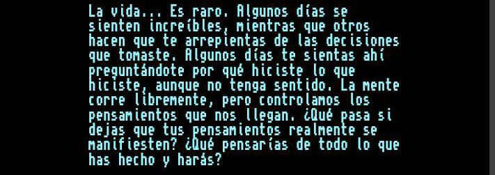
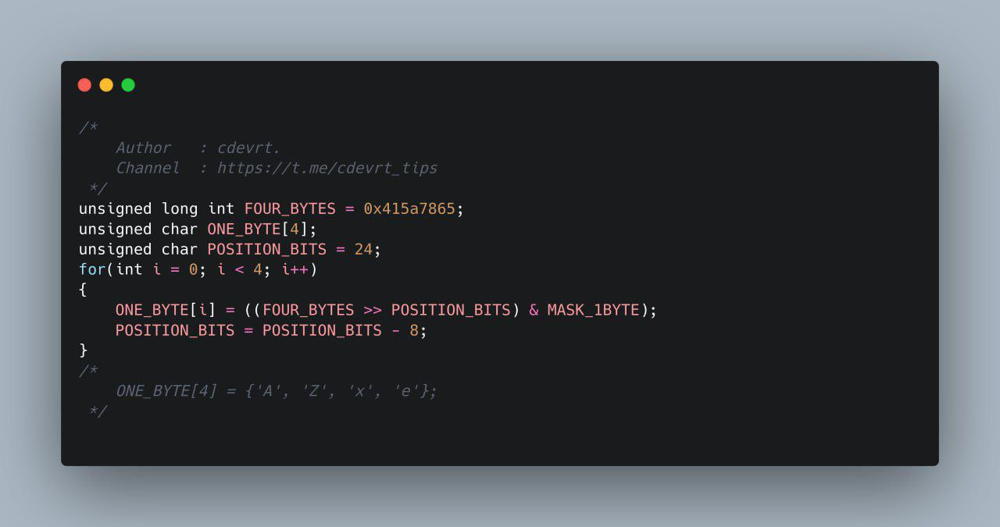
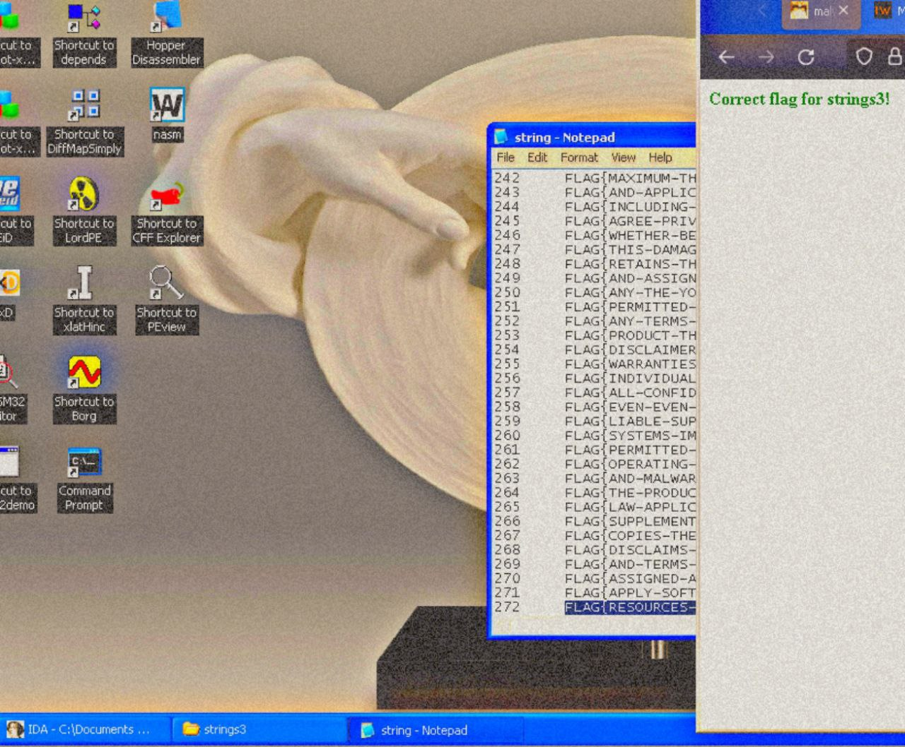
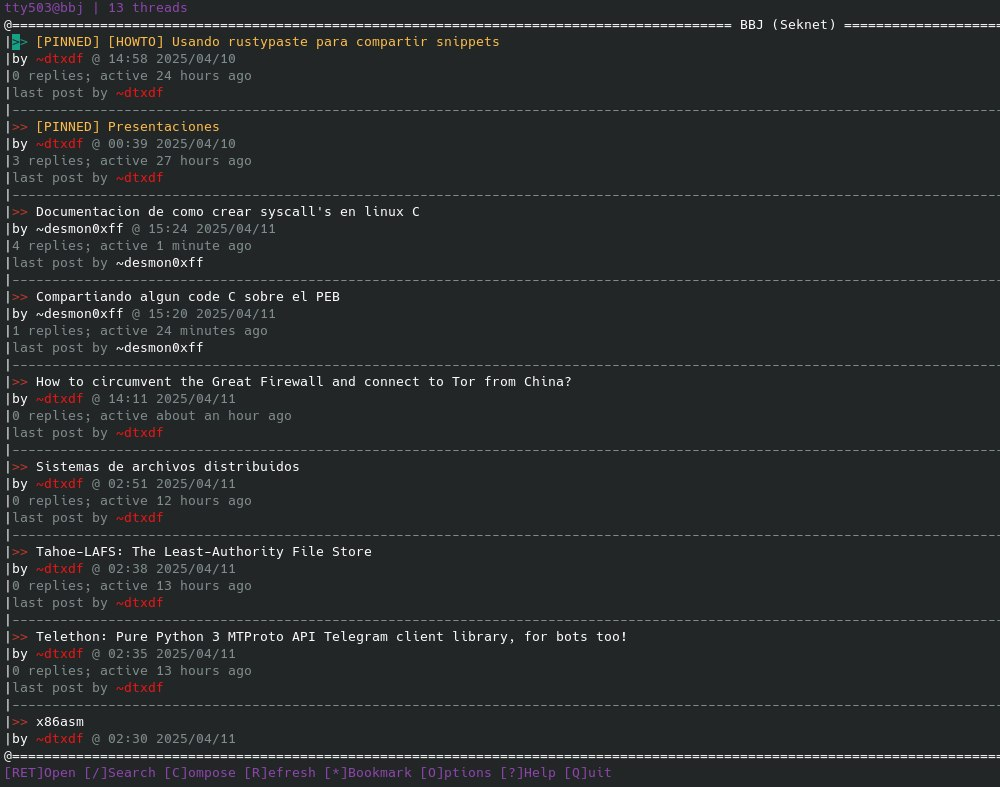
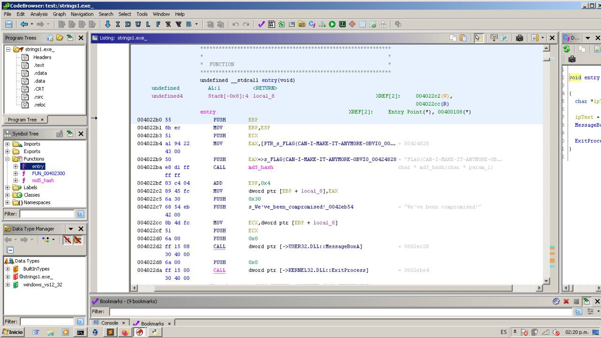
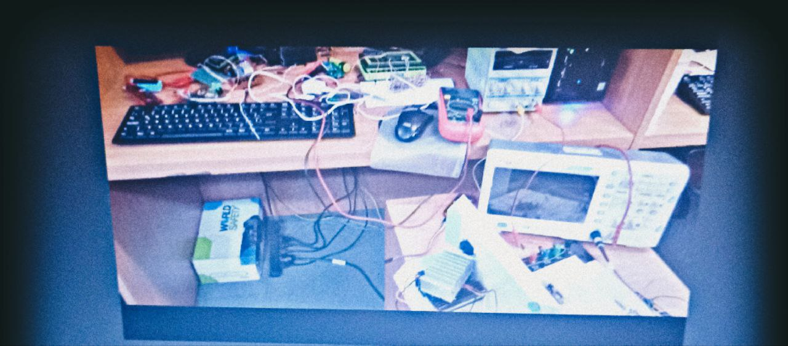
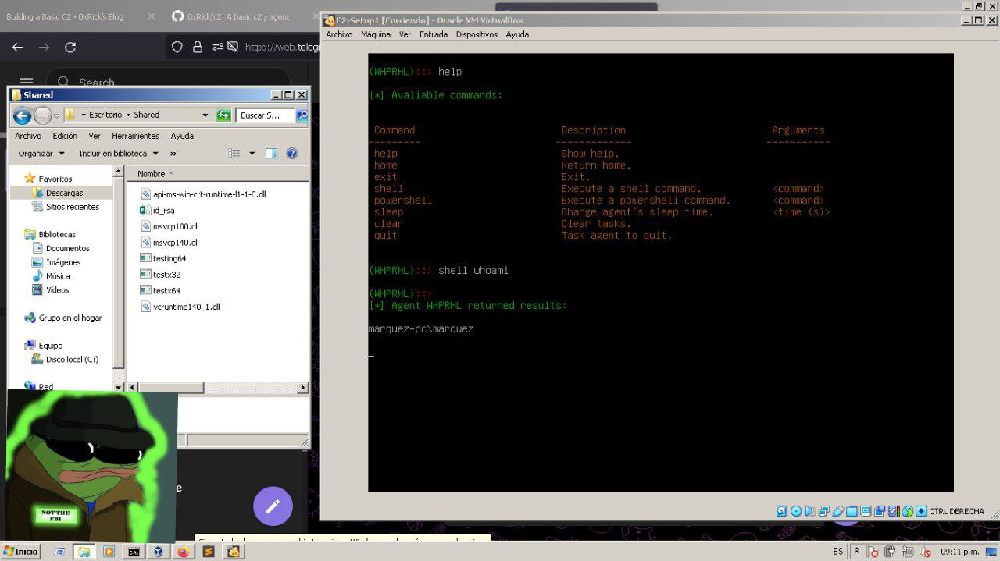
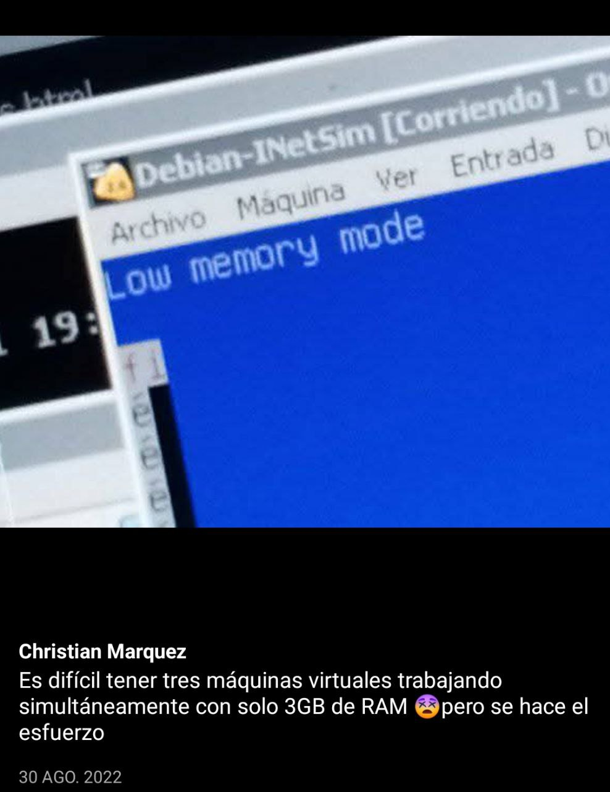
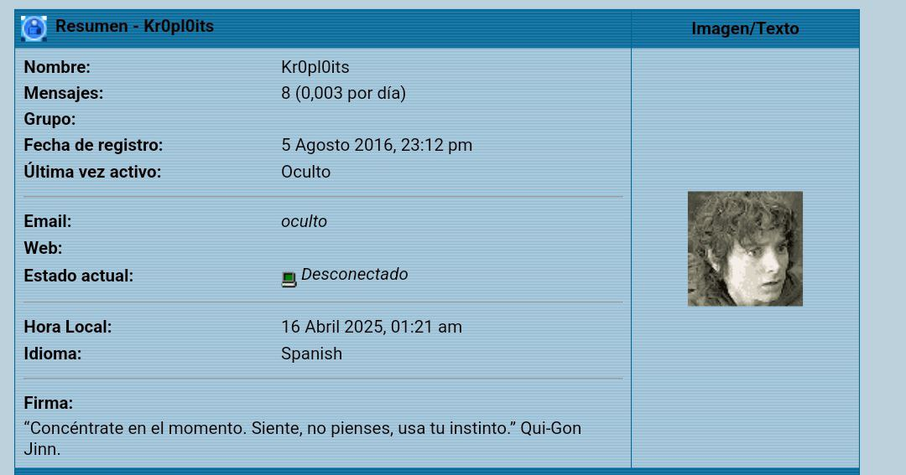

Mi Ruta Completa
De la curiosidad infantil a la ingeniería de herramientas ofensivas, threat intelligence y seguridad OT — una trayectoria autodidacta que atraviesa el firmware, el Assembly, la shellcode, el reversing de malware y los PLCs Siemens.
01. Resumen en números
02. Stack técnico
03. Entorno de operaciones
Mullvad VPN — túnel permanente con política estricta de no registros.
Kleopatra (GnuPG) — gestión diaria de llaves PGP para firma de código e integridad de artefactos.
Flatseal — control granular de permisos, red y sistema de archivos para cada Flatpak.
Timeshift — backups integrales a nivel de sistema antes de pruebas críticas.
Bleachbit — saneamiento automatizado de metadatos, cachés y trazas de ejecución.
VS Codium — editor principal con telemetría de Microsoft eliminada.
Mousepad — editor ligero para scripts rápidos y configuración directa.
JADX — descompilador de APKs y bytecode Java/Dex para auditoría de apps móviles.
Postman — testing exhaustivo de endpoints REST, simulación de vectores contra APIs.
GitHub Desktop — control de versiones y despliegue de herramientas de investigación.
Virtual Machine Manager (QEMU/KVM) — virtualización nativa a nivel de kernel para laboratorios de malware casi bare-metal.
Docker — entornos reproducibles para desarrollo y despliegue.
Obsidian — grafos de conocimiento en Markdown, base de la taxonomía de amenazas de SAINT GRAIL.
Firefox / Chromium / Chrome — testing cruzado de vectores web en motores Gecko y Blink.

04. Fase 1 — La Chispa y los Fundamentos 2012 – 2014
Todo comenzó en 2012 con una pregunta: «¿cómo funciona esto realmente?». Siendo apenas un estudiante de primaria, los lenguajes de scripting como Batch y VBScript fueron mi primer contacto con las instrucciones de E/S, las estructuras de control de flujo y el concepto de variables. No escribí nada relevante en aquel momento, pero esos primeros pasos establecieron una base sólida que luego resultaría fundamental.

La película Hackers (1995), que vi por casualidad en Space Channel, y la fascinación por casos históricos como Melissa e ILoveYou, me dieron un objetivo claro: entender cómo era posible infectar sistemas. Quería comprender la mecánica detrás de lo que veía en pantalla. Esa curiosidad por el malware —qué lo hacía funcionar, cómo se propagaba, cómo evadía defensas— fue el primer indicio de lo que años después se convertiría en mi enfoque profesional.

this->getHiddenObservers(); — La búsqueda de lo que no se ve a simple vista. Desde niño, siempre quise entender los mecanismos ocultos detrás de cada sistema.Mi padre fue el facilitador inconsciente de este viaje. Él introdujo la primera computadora en casa alrededor de 2006 y me enseñó los conceptos básicos sobre sistemas operativos y configuración de programas. Esos primeros años me enseñaron que la mejor forma de aprender es haciendo, incluso si eso significaba romper cosas en el proceso. Y vaya que rompí varias computadoras del hogar.

¿Cómo sabe la computadora a dónde mover el puntero del mouse? ¿Qué provoca que al pulsar la tecla 'A' se muestre en pantalla? Esas preguntas me mantenían despierto de noche. Quería entender la capa más baja, donde el software toca el silicio.

05. Fase 2 — Exploración y Ampliación del Espectro 2014 – 2018
El descubrimiento de los compiladores y de C/C++ en 2014 marcó un punto de inflexión. Entender la diferencia entre un intérprete y un compilador me abrió las puertas a un nuevo nivel de comprensión técnica. Poco después, la adopción de GNU/Linux expandió mi panorama por completo. Empecé a programar de verdad: manipulación de bits en C, contadores de población con tablas de consulta generadas en tiempo de compilación, empaquetado y desempaquetado de bytes, funciones para verificar el estado de bits individuales. Entender cómo la computadora representa y manipula datos a nivel binario fue el primer paso real hacia la ingeniería inversa, aunque en ese momento no lo supiera.




Este período fue de una exploración deliberadamente amplia. Pasé por el desarrollo web, de videojuegos, móvil y de sistemas embebidos. Probé decenas de distribuciones Linux y caí —como muchos— en el "fandom radical" de algunas tecnologías. Lejos de ser tiempo perdido, esta fase de sobresaturación me obligó a desarrollar una capacidad crítica para evaluar herramientas de manera objetiva, reconocer patrones entre distintas áreas y, crucialmente, entender qué ramas no eran para mí.


Dvju_2020-2022 contiene muestras reales de ransomware analizadas.Alrededor de 2014-2015 escribí mi primer malware en C. La historia es simple: un familiar insistente desde una cuenta falsa de Facebook. Le seguí la corriente varios días y luego preparé un programa que creaba múltiples hilos, esperaba un rato y mostraba mensajes en pantalla hasta sobrecargar la memoria. Sin mecanismos de persistencia ni evasión de AVs —no eran necesarios—. Comprimido en un RAR autoextraíble con un señuelo, cumplió su propósito. Fue divertido, pero sobre todo fue una lección práctica temprana sobre cómo el software puede afectar sistemas reales.
Por esa misma época desarrollé un keylogger que recopilaba pulsaciones en archivos diarios y las enviaba a un servidor No-IP que tenía configurado. Nunca le di un uso malicioso; solo lo probé en las computadoras de casa de mi abuelo. Era pura curiosidad técnica: entender cómo funcionaba el hooking de teclado y la exfiltración de datos a nivel de sistema operativo.

En 2017 conocí a un grupo de personas con intereses similares. Juntos creamos ReldSec, un blog de ciberseguridad donde publicábamos artículos técnicos. Al menos dos del equipo continuaron formándose profesionalmente en pentesting. Para mí, fue el primer ensayo real de colaboración, divulgación técnica y trabajo en equipo.

strings1.exe. Las flags visibles en el código y el MessageBox "We've been compromised!" — esos momentos de hallazgo que hacen adictivo el reversing.Años después, la nostalgia por aquellos espacios de intercambio real —mucho más íntimos y exigentes que las redes sociales masivas— me llevó a retomar la idea del BBS junto a @DtxdF y @syntaxerr0rs. Diseñamos la arquitectura sobre tres pilares fundamentales: descentralización con mirrors, pasarela mediante bot de Telegram, y firmas PGP para validar la identidad de cada miembro. El BBS tomó forma sobre TOR, reforzando el compromiso con la privacidad y la resistencia a la censura. Fue, en esencia, un laboratorio de infraestructura resiliente aplicada a la colaboración entre pares.
06. Fase 3 — El Crisol: Especialización y Propósito 2019 – Presente
La entrada a la universidad en 2019 y el posterior aislamiento de la pandemia en 2020 actuaron como un catalizador forzoso. Lejos de casa, pagando arriendo y sin una red de confianza cercana, mi ciclo de sueño —ya dañado de antes— se invirtió por completo. Pasaba las madrugadas explorando Arch Linux, obsesionado con las optimizaciones y el minimalismo. Incluso intenté montar un Linux From Scratch (LFS) varias veces sin éxito. Esas noches, lejos de ser improductivas, refinaron mi comprensión del sistema operativo a nivel fundamental.

Fue en ese contexto —2020, en pleno encierro— cuando descubrí VX-Underground. El hallazgo reavivó algo que llevaba años latente. Después de mucho tiempo en el "limbo" técnico, recordé por qué había empezado todo esto. Quería dedicarme al análisis de malware y la investigación en seguridad. Era mi meta final.
Decidí enfocarme. Necesitaba dominar la ingeniería inversa, y para ello necesitaba aprender Assembly. Pivoté entre Intel 8086, MIPS, x86 y x86_64, comparando NASM, FASM y MASM. Fue un proceso arduo de lectura y comprensión de las diferencias entre arquitecturas RISC y CISC, entre la sintaxis AT&T e Intel, y entre los modos de direccionamiento. Esas notas terminaron convirtiéndose en la guía de Assembly para Ingeniería Inversa que hoy forma parte del portafolio.
La shellcode fue el siguiente paso lógico. Recuerdo la primera vez que logré ejecutar calc.exe desde un buffer en la pila. Era un Windows Embedded de 32 bits corriendo en una máquina virtual con apenas 3 GB de RAM disponibles. El depurador mostraba los opcodes en hexadecimal y sus instrucciones equivalentes en x86: xor ecx, ecx, push ecx, mov eax, esp, call ebx, jmp eax. Esa progresión —desde entender la microarquitectura de una pila de llamadas hasta abstraer toda esa lógica en una fábrica automatizada de binarios— quedó documentada en el artículo De la Shellcode Artesanal al C2 Builder, donde recorro tres años de evolución en desarrollo de software de seguridad ofensiva.

xor ecx, ecx, push ecx, call ebx, jmp eax — junto a las herramientas Flare y Boxstarter. Así se veía mi laboratorio en 2022.En 2022, los microcontroladores PIC se cruzaron en mi camino. Quería profundizar en la programación a bajo nivel y entender cómo el software interactúa directamente con el hardware. Esta decisión resultó providencial: poco después conseguí mi primer empleo como desarrollador de firmware en CENDIT, donde programé microcontroladores PIC 18 y 24 para proyectos médicos y educativos. Implementé protocolos I2C y UART, y documenté algoritmos en LaTeX y PlantUML.

Hay una diferencia entre entender un sistema y comprenderlo. Entender es saber qué hace. Comprender es saber qué hará antes de que lo haga. Esa diferencia se mide en capas: desde el silicio hasta la nube, desde el registro del procesador hasta el túnel ofuscado que enmascara el tráfico, desde el PLC que controla un actuador físico hasta el SIEM que correlaciona eventos en tiempo real. Pocas disciplinas exigen ese rango. Esta es una de ellas.
Luego vino lo que llamo "el período de la ambición". Dejé el empleo como desarrollador de firmware para tomar una oportunidad como desarrollador Backend. ¿La razón? Necesitaba capital para comprar mejor equipo y seguir practicando. En menos de dos meses pude adquirir una computadora adecuada. Pero el costo fue alto: me había desviado de mi objetivo principal. Luego, arriesgué mi estabilidad laboral por un proyecto paralelo con un amigo que no llegó a concretarse. Mi rendimiento bajó, mi contrato no fue renovado y volví al desempleo.

shell whoami retornando marquez-pc\marquez. La ambición materializada en código.
Ese tropiezo me enseñó más que muchos éxitos. Aprendí a distinguir entre ambición calculada y dispersión. Aprendí que no basta con tener las habilidades; hay que mantener el enfoque. Y sobre todo, aprendí a levantarme.
Desde entonces, mantuve las prácticas de análisis de malware. Empecé una serie de notas sobre Assembly aplicado a ingeniería inversa, experimentando con la generación de código de los compiladores. Desarrollé pruebas de concepto de builders y variantes de malware con fines investigativos. Inicié una línea de investigación sobre exploits y comencé a documentarlo todo de forma sistemática. También empecé a estudiar ruso de forma autodidacta —irónicamente, se me hizo más fácil que el inglés— y tomé un curso universitario de seis meses que me dejó en un nivel A1-A2.

Hoy, cada proyecto —desde herramientas de triage automatizado como analystty hasta investigaciones de threat intelligence como la Threat Hunter Recollection, la Operación FakeWealth, las Operaciones General JP y SilentWarn o la deconstrucción de la red de Pig Butchering— es un paso firme hacia la maestría técnica. Ya no salto de rama en rama: construyo sobre una base sólida y diversa que pocos recorridos profesionales pueden ofrecer. Del firmware al threat hunting, del Assembly al SIEM, del PLC al honeypot: cada capa que he habitado me da una perspectiva que los especialistas unidimensionales no pueden replicar.
07. Ahora — En qué estoy trabajando
Actualmente mi investigación se centra en cuatro líneas principales que se alimentan entre sí:
→ Threat Intelligence & OSINT: Investigaciones de fraude financiero transfronterizo, mapeo de infraestructura criminal, correlación de wallets en blockchain y análisis de campañas de Pig Butchering. Documentadas en la Threat Hunter Recollection, la Operación FakeWealth, las Operaciones General JP y SilentWarn y el análisis de bybsusd.com. Cada investigación incluye IoCs, TTPs y correlación con amenazas documentadas por la industria.
→ Ingeniería Inversa & Pentesting: Análisis estático y dinámico de malware con Ghidra, x64dbg y Radare2. Auditorías de seguridad a Web APIs financieras (Pentesting a Web API Financiera), bypass de certificate pinning, token reuse con JWT, IDOR y desarrollo de herramientas propias como analystty para automatizar el triage de binarios PE.
→ Seguridad OT/PLC & Infraestructura Crítica: Análisis de bajo nivel de autómatas Siemens S5/S7, máquina virtual MC7, ingeniería inversa de bytecodes, protocolos industriales sin autenticación y hallazgos en infraestructuras críticas venezolanas como Venalum y CorpoElec (PLC Siemens S5/S7). En un país donde la infraestructura eléctrica y de telecomunicaciones se ha convertido en terreno de disputa, entender cómo proteger —o auditar— los controladores que gobiernan subestaciones y plantas no es académico: es estratégico.
→ Infraestructura Resiliente & Blue Team: Laboratorio SOC/Honeypot funcional con Proxmox, Wazuh, Zabbix, Grafana y despliegue IaC con Terraform y Ansible (infra-soc.html). Túneles ofuscados con WireGuard sobre TCP falso (Infraestructura Ofuscada), segmentación con OPNsense, Tailscale y Podman rootless. Cuando las redes nacionales están bajo vigilancia o sufren interferencias, mantener canales de comunicación seguros y resistentes a la interceptación deja de ser un ejercicio de laboratorio.
Mi ruta no ha sido lineal. He pasado del firmware de microcontroladores al análisis de amenazas persistentes avanzadas, de la shellcode artesanal a la automatización de infraestructura completa. Esa amplitud —operar con soltura desde el registro del procesador hasta la topología de una red ofuscada— es lo que define mi enfoque. No me especializo en una capa: entiendo cómo se conectan todas, y eso me permite trazar vectores de ataque y defensa que otros pasan por alto.
Estoy tratando activamente de ser mejor —técnica y personalmente—, de retomar el camino con más claridad que nunca, y de alcanzar el objetivo que me tracé hace más de una década.
08. ¿Buscas a alguien que construya las herramientas en lugar de solo usarlas?
Si tu equipo necesita un perfil que entienda la amenaza desde el opcode hasta la infraestructura del adversario —y que diseñe sus propios multiplicadores de fuerza con IA—, hablemos.